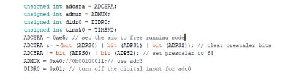

Final Robot Design and Documentation
Goals
Overall Objective: design, fabricate, and program a robot to autonomously explore a maze; control to be based on Arduino Uno and propulsion to be based on continuous rotation servos.
Robot Objectives
• Follow white lines on a black floor • Detect walls, an audible start signal, and treasures with different shapes and colors • Transmit its progress to a base station (based on Arduino Uno) and print the maze for verification (via GUI) • Apply some algorithm to effectively explore the maze • Avoid collision with other robots • Documentation of designs to be made on websiteLine Following
At first, we used the early implementation of line following from lab 1 and milestone 1, which used threshold values for the line sensors to determine when the robot should start and stop adjusting its course. Unfortunately, this implementation fell through as we added more components, mostly due to a constant change in the values our line sensors were detecting with regard to the thresholds we had in our code; this was in part due to the sensors’ position relative to the ground as we swapped out the parts holding them, and the sensors’ natural range/error in measurement depending on the environment we were testing in.
Our plan of action to remedy this was two-fold: stabilize the position of the sensors and standardize the threshold values being used. For the former, we designed and 3D printed a T-shaped part to hold all four line sensors at the same height right off the ground (without touching the ground) and to prove stable enough to maintain that height. Click the button below to jump to our additional content and files page where to talk about our other 3d printed parts. We achieved this last objective with a deft blend of superglue, screws and nuts, and willpower.
Now that we had a set height for the sensors, we went about standardizing the thresholds we used in our code. For this, we developed a snippet of code that determines useable threshold values on the spot each time it runs. It measures a series of line sensor values, takes the average, and uses the value to compute a threshold value that is then used in our general line following (and turning) code. Therefore, initializing our robot now involved placing it on a black maze tile to get that threshold, then on the white line to get that threshold, and finally running it as normal.

Wall Following
We wanted to make sure our wall detection was up to par as it formed an integral part of both our primary (pseudo-dfsWalk) and backup (wall following) methods of exploring the maze. Thankfully, the thresholding for the wall sensors was much less of a chore since those sensors were very precise and rather consistent. One issue we did encounter was obstruction of the sensors by other parts of the robot. Some of the wires or our microphone dropped to either side of the robot (where the wall sensors are facing) and therefore skewed the detection (the robot would detect a non-existent wall). The fix was simply to move the obstructions out of the way by either binding them to a part or coiling them with some other non-obstructing wire.
Robot Detection
The final competition requires all robots to have an IR hat that transmits a frequency of 6.08k Hz and a circuit implemented on our robot that would detect the presence of such an IR hat. To do so, we set two phototransistors in parallel, which allowed us to detect frequencies at a distance without an op-amp.
For our robot detection code, we used the FFT library that outputs values from each bin. Initially, we were sampling from 256 bins, but for the competition, we changed the sample size to 128 to save on memory. As we iterated through all the bins, we saw that the 6.08kHz signal from the IR hat could be found in bin 21. We then determined the value we would be seeing in the bin with a robot at a distance of 6 in. and programmed our robot to stand still when that value had been reached.
We noticed that when we integrated the robot detection code into the main code, the initialization of some of the variables in the setup portion of the code interfered with the functionality of the rest of the it. To get around this issue, instead of initializing these variables in the general setup portion of the main code, we created temporary variables to store the initial values used in the main code, initialize the variables in the beginning of the robot detection function, and reset the variables by giving them the initial stored values that were saved before the function was called.
The initial saving of the variables:
Resetting the variables once the function finishes its job:
Unresolved Issues
Microphone Circuit:
As mentioned earlier in the robot detection section, we reduced the number of bin samples from 256 to 128 to save on memory. When we did this, the bin we needed to search in for the 660 Hz starting tone had changed and we needed to find this new bin. However, the changing of the number of bins we sampled was a last minute change, and due to time constraints we did not have time to test the bins and find the correct bin number.
Camera and Treasure Detection:
For the final competition, our team planned to integrate our camera and treasure detection circuit with our main robot. However, when we transferred the camera circuit onto our robot and tested its output, our camera would output colorful noise rather than the clear images it normally would yield. To troubleshoot this issue, we removed the camera circuit from the main robot Arduino and ran our treasure detection code to see if we could salvage our camera detection functionality by adding a second Arduino onto the robot. Unfortunately, even after removing the camera from the robot, our camera output was colorful and noisy. When this issue originally arose, we only had a night before the competition, and decided to focus our attention to other, more pressing issues, and as a result, never got around to resolving this problem.